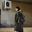
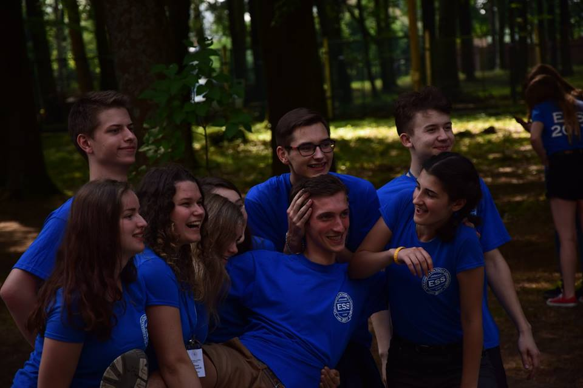

Senkivskyy Arsen
-
 Name Surname 21 September at 19:48 ESS 2017 is in history already. ESS means a lot to all its participants. ESS is connecting people, changing their lives and teaching students not only English but many more important things. I want to thank all volunteer teachers who made our program exciting, interesting and full of energy. You are awesome and we hope to see you soon at ESS and at UCU ;) 